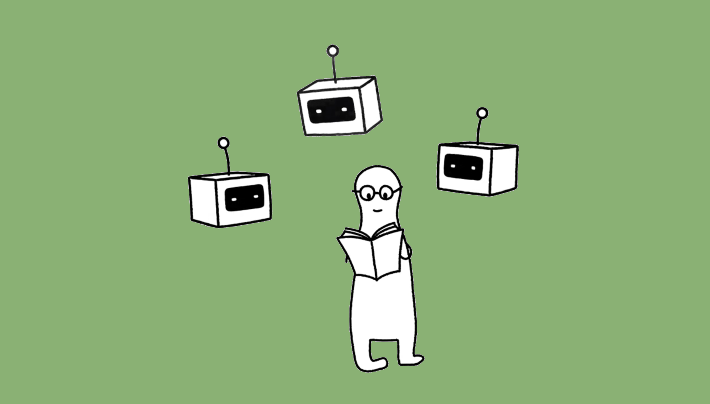
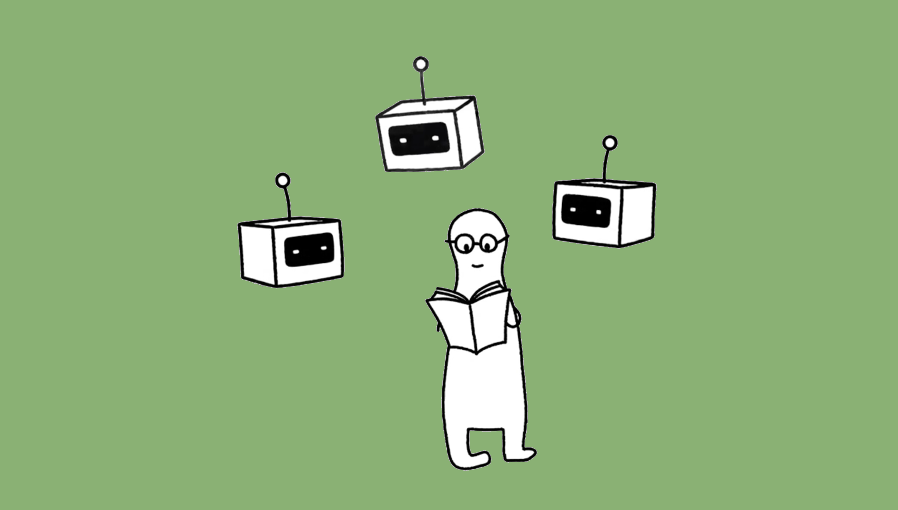
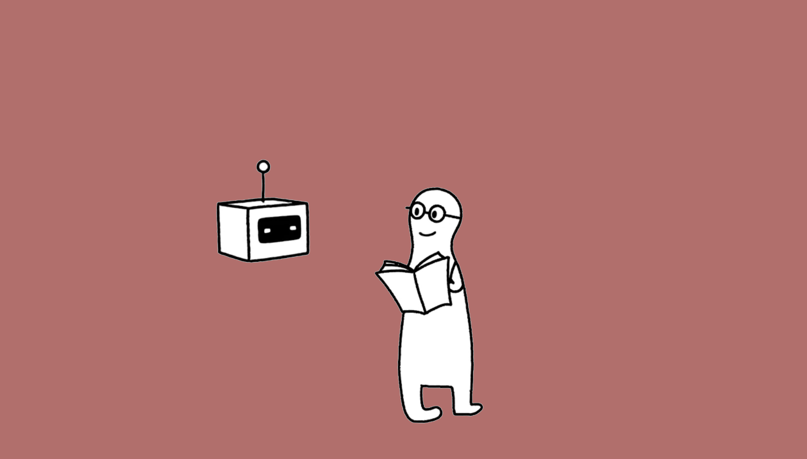
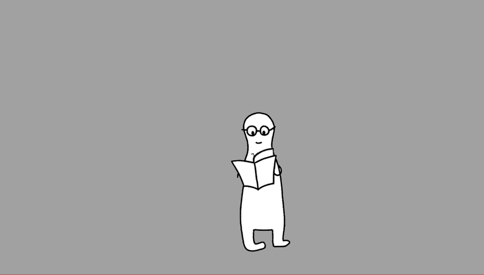

Multiple-agent Condition
Participants exchanged thoughts with multiple AI agents representing different research domains, enabling interdisciplinary perspectives.
Critical reading is a primary way through which researchers develop their critical thinking skills. While exchanging thoughts and opinions with peers can strengthen critical reading, junior researchers often lack access to peers who can offer diverse perspectives.
To address this gap, we designed an in-situ thought exchange interface informed by peer feedback from a formative study (N=8) to support junior researchers' critical paper reading. We evaluated the effects of thought exchanges under three conditions (no-agent, single-agent, and multi-agent) with 46 junior researchers over two weeks.
Our results showed that incorporating agent-mediated thought exchanges during paper reading significantly improved participants' critical thinking scores compared to the no-agent condition. In the single-agent condition, participants more frequently made reflective annotations on the paper content. In the multi-agent condition, participants engaged more actively with agents' responses. Our qualitative analysis further revealed that participants compared and analyzed multiple perspectives in the multi-agent condition.
This work contributes to understanding in-situ AI-based support for critical paper reading through thought exchanges and offers design implications for future research.
Participants exchanged thoughts with multiple AI agents representing different research domains, enabling interdisciplinary perspectives.
In this condition, participants exchanged thoughts with a single AI agent from a specific research domain in a one-on-one setup.
Participants receive only a static text-based reminder based on the QRAC approach, encouraging self-revision without interactive feedback features.
The user study consisted of three phases (shown as Figure 4): a 1.5-hour pre-training test (Day 1), a two-week critical reading training period (Day 2–15), and a 1.5-hour post-training test (Day 16). The pre- and post-training tests were conducted within three days before and after the training period, respectively. To mitigate order effects, papers 1 and 8 were counterbalanced so that half of the participants received them in reverse order
Our mixed-methods user study demonstrated that (1) incorporating agent-mediated thought exchanges during academic paper reading fostered junior researchers’ critical thinking skills; and (2) the number of agents involved influenced readers’ critical reading practices in distinct ways.
Specifically, participants interacting with a single agent tended to annotate directly in the text after viewing the AI agent’s response as a way to reflect on their thoughts; in contrast, those engaging with multiple agents primarily focused on comparing and analyzing the different perspectives expressed by the AI agents, while paying less attention to annotating directly on the text.
Our contribution lies in designing LLMs that encourage users to invest more cognitive effort into reading instead of offloading it.
@inproceedings{Fang2026InSituThoughtExchanges,
author = {Fang, Xinrui and Xu, Anran and Yang, Chi-Lan and Lin, Ya-Fang and Malacria, Sylvain and Yatani, Koji},
title = {LLM-based In-situ Thought Exchanges for Critical Paper Reading},
booktitle = {Proceedings of the 31st International Conference on Intelligent User Interfaces},
series = {IUI '26},
year = {2026},
pages = {1--22},
address = {New York, NY, USA},
publisher = {ACM},
doi = {10.1145/3742413.3789069},
url = {https://doi.org/10.1145/3742413.3789069}
}